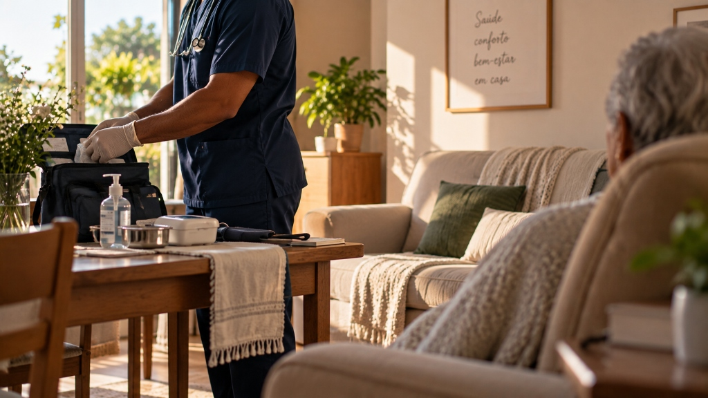

Precisa de um enfermeiro para acompanhar alguém importante para você?
Presença também é uma forma de cuidado.
Hospital, clínica ou domicílio em Goiânia e Aparecida de Goiânia. Me conte a situação do paciente.
GOIÂNIA · APARECIDA DE GOIÂNIA
NO HOSPITAL
Quando um familiar está hospitalizado.
Acompanhamento particular de enfermagem durante o período de internação, garantindo vigilância técnica, suporte contínuo e tranquilidade para a família.
Explicar situação no hospital no WhatsApp →EM CASA
Quando o acompanhamento acontece no ambiente familiar.
Acompanhamento particular de enfermagem em domicílio para idosos e outros pacientes, oferecendo segurança profissional dentro da rotina de casa.
Explicar situação em casa no WhatsApp →EM MOMENTOS DELICADOS
Quando presença e atenção se tornam ainda mais importantes.
Acompanhamento de enfermagem em cuidados paliativos e fase terminal, priorizando conforto, alívio de dor e presença humanizada.
Explicar situação delicada no WhatsApp →
Você quer estar ao lado
de quem precisa de você.
É aí que entra
o acompanhamento particular
de enfermagem.
Maruan realiza acompanhamento em hospital, clínica ou domicílio, conforme a necessidade do paciente e da família.
Maruan Ramos Vaz — Enfermeiro
Maruan é enfermeiro graduado pela UNESC e realiza o acompanhamento de acordo com a necessidade previamente apresentada pelo paciente e pela família.
“Conhecimento para cuidar. Presença para acolher.”
Como funciona o atendimento
Dúvidas frequentes
01 Atende em hospital?
Sim. Realizo acompanhamento particular em hospitais e clínicas em Goiânia e Aparecida de Goiânia.
02 Atende em domicílio?
Sim. Realizo acompanhamento em residências para idosos e outros pacientes.
03 Pode acompanhar idosos?
Realizo acompanhamento de idosos em domicílio ou no hospital, conforme a necessidade apresentada.
04 Posso contratar para um familiar?
Sim. Você pode me chamar no WhatsApp para explicar a situação do seu familiar e alinharmos o atendimento.
05 Como sei se a situação pode ser atendida?
Basta me explicar a situação do paciente pelo WhatsApp. A partir das informações iniciais, verifico a possibilidade do atendimento.
06 Onde você atende?
Atendo em Goiânia e Aparecida de Goiânia.
Precisa de acompanhamento para um familiar?
Me conte a situação.
GOIÂNIA · APARECIDA DE GOIÂNIA